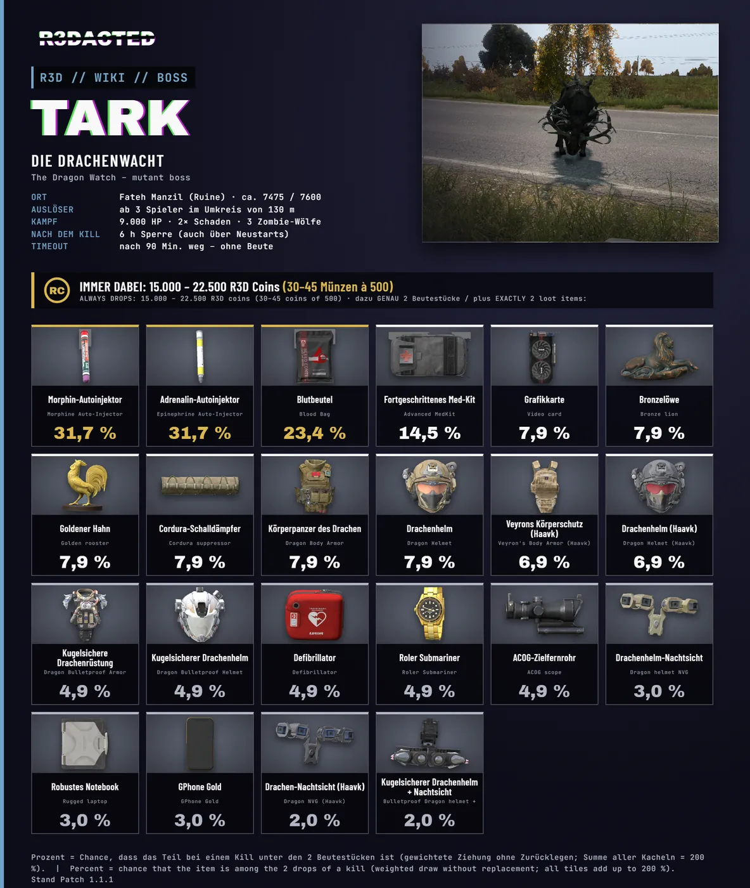

🐲 Boss: Tark – die Drachenwachtthe Dragon Watch
🐲 Boss: Tark – Beute, Chancen, Wiederkehr.
🐲 Boss: Tark – loot, chances, respawn.

Wo: Fateh Manzil, die Ruine (ca. 7475 / 7600).
Auslöser: Der Boss erscheint, sobald mindestens 3 Spieler gleichzeitig im Umkreis von 130 m stehen.
Gegner: Tark hat 9.000 Lebenspunkte und teilt doppelten Schaden aus. Dazu 3 schwarze Zombie-Wölfe. Er regeneriert sich im Kampf – nicht zu lange pausieren.
Beute
- Immer: 15.000 – 22.500 R3D Coins (30–45 Münzen à 500)
- Dazu GENAU 2 Beutestücke, gezogen aus 22 möglichen Teilen (Liste mit Bildern und Chancen im Bild oben). Die Zahl im Bild ist die Chance, dass ein Teil bei einem Kill dabei ist: Medizin am häufigsten (bis 31,7 %), Spitzenteile am seltensten (ab 2,0 %).
- Die Beute liegt dort, wo der Boss gestorben ist.
Wiederkehr
Nach einem Kill ist der Boss 6 Stunden gesperrt – auch über Server-Neustarts hinweg. Danach kann er wieder auftauchen, wenn 3 Spieler im Bereich sind. Wird er 90 Minuten nach dem Erscheinen nicht besiegt, verschwindet er ohne Beute.
Tipps
- Kommt mit Gruppe, genug Munition und Heilung
- Erst die Begleiter, dann den Boss
- Teilt die Beute fair
Where: Fateh Manzil, the ruin (approx. 7475 / 7600).
Trigger: The boss appears as soon as at least 3 players are within 130 m at the same time.
Enemies: Tark has 9,000 health and deals double damage. Plus 3 black zombie wolves. It regenerates during the fight – do not pause for too long.
Loot
- Always: 15,000 – 22,500 R3D Coins (30–45 coins of 500)
- Plus EXACTLY 2 loot items, drawn from 22 possible items (list with pictures and chances in the image above). The number in the image is the chance that an item is among the drops of a kill: medical items most often (up to 31,7 %), top items rarest (from 2,0 %).
- The loot lies where the boss died.
Respawn
After a kill the boss is locked for 6 hours – also across server restarts. After that it can show up again once 3 players are in the area. If it is not defeated within 90 minutes of appearing, it vanishes without loot.
Tips
- Bring a group, enough ammo and healing
- Escorts first, then the boss
- Share the loot fairly